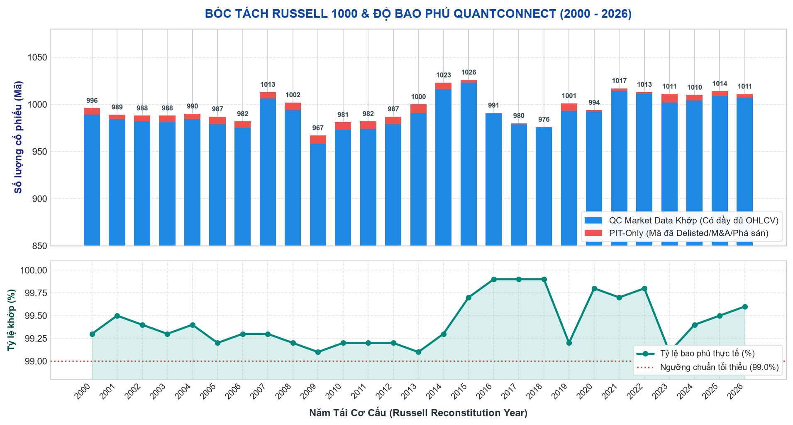

📜 Báo Cáo Kỹ Thuật: Tiền Xử Lý Dữ Liệu Russell 1000 Point-In-Time (2000–2026)
Giải trình toàn diện quy trình trích xuất tài liệu thô (PDF, CSV, JSON, XLS), lịch trình tái cơ cấu thường niên của FTSE Russell, thuật toán bóc tách văn bản qua các kỷ nguyên và giải pháp triệt tiêu hoàn toàn Look-ahead Bias & Survivorship Bias trong đồ án định lượng.
1.1 Russell 1000 Là Gì?
Chỉ số Russell 1000 Index (được duy trì bởi FTSE Russell / LSEG) là chuẩn đo lường vị thế của phân khúc vốn hóa lớn (Large-cap) trong thị trường chứng khoán Hoa Kỳ. Chỉ số bao gồm khoảng 1,000 công ty niêm yết lớn nhất, chiếm xấp xỉ 93% tổng vốn hóa thị trường chứng khoán Mỹ (tương đương khoảng $35,000 tỷ USD).
1.2 Tiêu Chí Chọn Lọc Cổ Phiếu — Điểm Tựa Khoa Học Cốt Lõi
Trong nghiên cứu định lượng (Quantitative Finance), nguy cơ lớn nhất khi chọn một rổ cổ phiếu là Selection Bias (Thiên vị lựa chọn). Ví dụ: Nếu ta tự chọn ra 50 cổ phiếu công nghệ "nổi tiếng nhất", ta đã vô thức chọn những công ty đã thành công vang dội trong quá khứ.
FTSE Russell tuyển chọn thành viên HOÀN TOÀN DỰA TRÊN THỨ HẠNG VỐN HÓA THỊ TRƯỜNG (Market Capitalization Ranking) tại ngày Rank Day.
Chỉ số KHÔNG lựa chọn cổ phiếu dựa trên lợi nhuận quá khứ (past performance), không dựa trên tỷ lệ tăng trưởng doanh thu hay lợi nhuận kế toán (profitability).
Quy trình tinh gọn của FTSE Russell có thể tóm tắt bằng công thức:
Tất nhiên, FTSE Russell còn áp dụng thêm một số quy tắc phụ trợ như: tỷ lệ cổ phiếu tự do chuyển nhượng (Free-float > 5%), ngưỡng thanh khoản tối thiểu, và dải đệm dung sai vốn hóa (5% Banding Rule) để hạn chế vòng quay chỉ số (turnover). Tuy nhiên, về mặt bản chất định lượng, đây là một Universe khách quan, không chứa bias chủ quan của con người.
2.1 Cạm Bẫy 1: Survivorship Bias (Thiên Lệch Kẻ Sống Sót)
Hầu hết các bài tập hoặc đồ án ML sinh viên thường mắc sai lầm nghiêm trọng sau: Tải danh sách cổ phiếu Russell 1000 của ngày hôm nay (năm 2026), rồi dùng danh sách đó để tải dữ liệu lịch sử từ năm 2000 đến 2026.
Nếu làm như vậy, mô hình sẽ chỉ được huấn luyện trên những công ty đã sống sót qua 27 năm (như Apple, Microsoft, Amazon) và hoàn toàn "lờ đi" hàng trăm công ty từng là gã khổng lồ trong quá khứ nhưng sau đó phá sản hoặc biến mất (Enron, WorldCom, Lehman Brothers, Washington Mutual, Bear Stearns, Blockbuster...).
Kết quả: Tỷ suất sinh lời của mô hình sẽ bị phóng đại một cách giả tạo (Over-optimistic), đưa vào thực tế giao dịch chắc chắn sẽ thua lỗ nặng.
2.2 Cạm Bẫy 2: Look-Ahead Bias (Nhìn Trộm Dữ Liệu Tương Lai)
Look-ahead bias xảy ra khi mô hình tại thời điểm $t$ sử dụng bất kỳ thông tin nào mà tại thời điểm $t$ thị trường chưa hề biết đến.
Trong việc xây dựng Universe, nếu ta gắn danh sách Russell 1000 công bố năm 2020 cho ngày 01/01/2020, ta đã phạm phải Look-ahead bias. Bởi vì tại ngày 01/01/2020, FTSE Russell chưa hề họp và chưa hề công bố danh sách năm 2020! Thị trường thực tế lúc đó vẫn đang giao dịch theo danh mục của đợt tái cơ cấu tháng 6/2019.
2.3 Định Nghĩa: Point-In-Time (PIT) Universe Chuẩn Mực
Một vũ trụ cổ phiếu được gọi là Audit-Grade Point-In-Time khi thỏa mãn 2 điều kiện bất khả xâm phạm:
- Điều kiện 1 (Không có Survivorship Bias): Tại bất kỳ ngày giao dịch $d$ trong lịch sử, danh sách cổ phiếu xem xét đúng bằng danh sách cổ phiếu thực tế có trong chỉ số tại đúng ngày $d$ đó (bao gồm cả các mã sau này phá sản hay hủy niêm yết).
- Điều kiện 2 (Không có Look-Ahead Bias): Thông tin xác định cổ phiếu có trong rổ tại ngày $d$ phải được công bố công khai và có hiệu lực thi hành trước hoặc đúng tại phiên giao dịch $d$.
3.1 Các Mốc Thời Gian Vàng Hàng Năm
FTSE Russell tái cơ cấu chỉ số Russell US Indexes định kỳ mỗi năm một lần vào tháng 6. Để mô phỏng đúng 100% dòng thời gian thực tế, đồ án bám sát lịch trình kỹ thuật sau:
3.2 Bảng Tra Cứu Ngày Reconstitution Thực Tế (Mẫu một số năm)
| Năm | Rank Day | Preliminary List | Reconstitution Day (Thứ 6 cuối tháng 6) | Effective Trading Day |
|---|---|---|---|---|
| 2000 | 31/05/2000 | 09/06/2000 | 30/06/2000 (Thứ Sáu) | 03/07/2000 (Thứ Hai) |
| 2008 | 30/05/2008 | 13/06/2008 | 27/06/2008 (Thứ Sáu) | 30/06/2008 (Thứ Hai) |
| 2020 | 08/05/2020 | 05/06/2020 | 26/06/2020 (Thứ Sáu) | 29/06/2020 (Thứ Hai) |
| 2024 | 30/04/2024 | 24/05/2024 | 28/06/2024 (Thứ Sáu) | 01/07/2024 (Thứ Hai) |
| 2025 | 30/04/2025 | 23/05/2025 | 27/06/2025 (Thứ Sáu) | 30/06/2025 (Thứ Hai) |
| 2026 | 30/04/2026 | 22/05/2026 | 26/06/2026 (Thứ Sáu) | 29/06/2026 (Thứ Hai) |
4.1 Lỗ Hổng Ban Đầu & Phát Hiện Look-Ahead Bias
Trong các thiết kế ngây thơ ban đầu, nhiều nhà nghiên cứu gán file danh sách thành viên năm $Y$ (ví dụ: `russell1000_2021.json`) cho toàn bộ các ngày từ $01/01/2021$ đến $31/12/2021$.
Tại ngày $15/03/2021$, nếu ta áp danh sách của năm 2021, mô hình đã "biết trước" công ty nào sẽ tăng vốn hóa mạnh để lọt vào Russell 1000 vào cuối tháng 6/2021!
Thực tế vào ngày $15/03/2021$, danh sách hợp lệ duy nhất mà các quỹ ETF và nhà đầu tư giao dịch là danh sách chốt từ đợt Reconstitution tháng 06/2020.
4.2 Quy Tắc Phân Định Point-In-Time Chuẩn Xác
Để đảm bảo không rò rỉ bất kỳ thông tin tương lai nào, hệ thống thiết lập công thức toán học phân định hiệu lực thời gian:
Quy ước hiệu lực thời gian:
Ngày giao dịch d thuộc Universe năm Y ⟺ recon(Y) < d ≤ recon(Y + 1)
Trong đó:
Hệ quả thực tế:
- Nửa đầu năm (01/01 đến cuối tháng 6 năm Y): Áp dụng danh sách của năm Y - 1.
- Nửa cuối năm (Đầu tháng 7 đến 31/12 năm Y): Áp dụng danh sách chính thức của năm Y.
- Giai đoạn trước đợt Recon đầu tiên (trước 30/06/2000): Do không có dữ liệu Russell 1000 năm 1999, toàn bộ các ngày giao dịch từ 03/01/2000 đến 30/06/2000 được gán
mask = False (loại bỏ khỏi tập huấn luyện để tuyệt đối tránh Look-ahead bias).
4.3 Triển Khai Trong Mã Nguồn Python (src/data/pit_universe.py )
def reconstitution_date(year: int) -> pd.Timestamp:
"""Ngày reconstitution năm `year` = thứ Sáu cuối cùng của tháng 6."""
d = date(year, 6, 30)
d -= timedelta(days=(d.weekday() - 4) % 7) # lùi về thứ Sáu (weekday 4)
return pd.Timestamp(d)
def membership_year_for_dates(dates: Iterable, years: Iterable[int]) -> pd.Series:
"""Xác định năm danh mục có hiệu lực tại từng ngày giao d (recon(Y) < d)."""
idx = pd.DatetimeIndex(pd.to_datetime(list(dates)))
years = sorted(years)
recon = pd.DatetimeIndex([reconstitution_date(y) for y in years])
# Tìm vị trí list có recon(Y) < d bằng searchsorted
pos = recon.searchsorted(idx, side="left") - 1
eff = np.where(pos >= 0, np.array(years)[np.clip(pos, 0, None)], np.nan)
return pd.Series(eff, index=idx, name="membership_year")5.1 Chiến Lược Thu Thập Đa Nguồn (Multi-Source Harvesting)
Do FTSE Russell không phát hành một API lịch sử miễn phí xuyên suốt 27 năm, dự án đã triển khai chiến lược thu thập dữ liệu lưu trữ từ 3 nguồn độc lập:
5.2 Bảng Tổng Kê 27 File Dữ Liệu Thô (data/raw/universe/raw_universe/ )
| Năm | Tên File Thô | Định Dạng | Kích Thước | Nguồn Gốc & Kỷ Nguyên Bóc Tách |
|---|---|---|---|---|
| 2000 | 2000.pdf | 44.5 KB | Frank Russell Annual Rebalancing Report (Era-1) | |
| 2001 | 2001.pdf | 48.3 KB | Frank Russell Annual Rebalancing Report (Era-1) | |
| 2002 | 2002.pdf | 48.0 KB | Frank Russell Annual Rebalancing Report (Era-1) | |
| 2003 | 2003.pdf | 87.3 KB | Frank Russell Annual Rebalancing Report (Era-1) | |
| 2004 | 2004.pdf | 87.6 KB | Frank Russell Annual Rebalancing Report (Era-1) | |
| 2005 | 2005.pdf | 62.8 KB | Frank Russell Annual Rebalancing Report (Era-1) | |
| 2006 | 2006.pdf | 269.2 KB | Frank Russell Annual Rebalancing Report (Era-1) | |
| 2007 | 2007.pdf | 269.8 KB | Russell Indexes Reconstitution Publication (Era-1) | |
| 2008 | 2008.csv | CSV | 22.2 KB | Bảng dữ liệu thành phần Reconstitution 2008 |
| 2009 | 2009.pdf | 1.18 MB | Russell Reconstitution Complete Roster (Era-2) | |
| 2010 | 2010.pdf | 149.3 KB | Russell Reconstitution Complete Roster (Era-2) | |
| 2011 | 2011.pdf | 206.7 KB | Russell Reconstitution Complete Roster (Era-2) | |
| 2012 | 2012.pdf | 133.2 KB | Russell Reconstitution Complete Roster (Era-2) | |
| 2013 | 2013.pdf | 637.2 KB | Russell Reconstitution Complete Roster (Era-2) | |
| 2014 | 2014.pdf | 656.2 KB | Russell Reconstitution Complete Roster (Era-2) | |
| 2015 | 2015.pdf | 775.6 KB | FTSE Russell Annual Reconstitution (Era-2) | |
| 2016 | 2016.pdf | 79.5 KB | FTSE Russell Annual Reconstitution (Era-3) | |
| 2017 | 2017.pdf | 181.6 KB | FTSE Russell Annual Reconstitution (Era-3) | |
| 2018 | 2018.pdf | 184.1 KB | FTSE Russell Annual Reconstitution (Era-3) | |
| 2019 | 2019.json | JSON | 498.3 KB | API Snapshot hệ thống FTSE Russell (aaData array) |
| 2020 | 2020.pdf | 251.5 KB | FTSE Russell Annual Reconstitution (Era-3) | |
| 2021 | 2021.pdf | 253.3 KB | FTSE Russell Annual Reconstitution (Era-3) | |
| 2022 | 2022.pdf | 252.8 KB | FTSE Russell Annual Reconstitution (Era-3) | |
| 2023 | 2023.json | JSON | 504.2 KB | API Snapshot hệ thống FTSE Russell (aaData array) |
| 2024 | 2024.json | JSON | 504.2 KB | API Snapshot hệ thống FTSE Russell (aaData array) |
| 2025 | 2025.xls | XLS | 3.62 MB | FTSE Russell Official Master Spreadsheet (XML SpreadsheetML) |
| 2026 | 2026.xls | XLS | 3.72 MB | FTSE Russell Official Master Spreadsheet (XML SpreadsheetML) |
| 2026* | iwb_holdings_2026-09-30.csv | CSV | 114.2 KB | BlackRock iShares IWB ETF Snapshot đối soát thực tế |
6.1 Thách Thức Về Cấu Trúc Văn Bản PDF
Tài liệu PDF của FTSE Russell qua 27 năm không sử dụng một mẫu layout cố định. Trình render văn bản của thư viện
Qua quá trình phân tích thấu đáo luồng văn bản thô, pipeline phân chia thành 3 Kỷ Nguyên Bóc Tách (3 Eras):
Era-1 (2000–2007): Cấu trúc "Ticker First"
Trong các báo cáo thời kỳ 2000–2007, mỗi dòng dữ liệu bắt đầu bằng mã Ticker (viết hoa, 1-5 chữ cái), theo sau bởi các khoảng trắng và Tên đầy đủ của công ty.
Pattern: ^([A-Z][A-Z0-9\-]{0,5})\s{1,4}[A-Z0-9&]
def parse_era1(text: str) -> set:
tickers = set()
for line in text.split("\n"):
line = line.strip()
if not line:
continue
m = re.match(r"^([A-Z][A-Z0-9\-]{0,5})\s{1,4}[A-Z0-9&]", line)
if m:
t = m.group(1)
if is_valid_ticker(t):
tickers.add(t)
return tickersEra-2 (2009–2015): Cấu trúc "Ticker Last"
Từ năm 2009, FTSE Russell đổi thiết kế bảng: Cột Tên công ty nằm ở bên trái, cột Ticker nằm ở ngoài cùng bên phải. Khi bóc tách text, Ticker trở thành từ cuối cùng trên dòng.
Pattern: Từ cuối cùng trên dòng có độ dài 1-6 ký tự viết hoa.
def parse_era2(text: str) -> set:
tickers = set()
for line in text.split("\n"):
line = line.strip()
if not line or re.match(r"^(Company|Ticker|As of|Russell|FTSE)", line):
continue
parts = line.split()
if len(parts) >= 2:
t = parts[-1].replace(".", "-")
if re.fullmatch(r"[A-Z][A-Z0-9\-]{0,5}", t) and is_valid_ticker(t):
tickers.add(t)
return tickersEra-3 (2016–2022): Cấu trúc "Dòng Xen Kẽ" (Alternating Lines)
Đây là kỷ nguyên phức tạp và nguy hiểm nhất: Bản in PDF 2016–2022 xuất dòng xen kẽ: Dòng lẻ là Tên công ty, Dòng chẵn là Ticker.
Giải pháp: Strict Pair-Based Parsing — Bắt buộc đi theo cặp: Đọc dòng 1 (Tên công ty) ➔ Đọc dòng 2 (Ticker). Chỉ lấy dòng 2 làm Ticker nếu dòng 1 đã xác nhận là tên công ty.
def parse_era3(text: str) -> set:
tickers = set()
lines = [l.strip() for l in text.split("\n") if l.strip()]
i = 0
while i < len(lines):
line = lines[i]
if re.match(r"^(Company|Ticker|Russell|FTSE|As\s*of|\d{4})", line, re.IGNORECASE):
i += 1
continue
if i + 1 < len(lines):
next_line = lines[i + 1]
if re.fullmatch(r"[A-Z][A-Z0-9\-]{0,5}", next_line):
t = next_line.replace(".", "-")
if is_valid_ticker(t):
tickers.add(t)
i += 2 # Xử lý đồng thời cả cặp (Company Name + Ticker)
continue
i += 1
return tickers6.2 Bóc Tách Các Định Dạng Non-PDF (JSON, XLS, CSV)
- JSON (2019, 2023, 2024): Dữ liệu dạng mảng lồng nhau `
data["aaData"] `. Phần tử đầu tiên của mỗi dòng `row[0]` là mã cổ phiếu. - XLS (2025, 2026): Bản chất là định dạng XML SpreadsheetML chuẩn của Microsoft. Sử dụng regex bóc tách trực tiếp các khối thẻ XML: `
<ss:Row> ` và `<ss:Data> `. - CSV (2008): Sử dụng
pandas.read_csv chuẩn hóa nhanh chóng.
7.1 Bộ Lọc Stop-Words Tài Chính (Finance Noise Words)
Khi bóc tách PDF, các tiêu đề cột, tiêu đề trang và từ viết hoa thông dụng thường bị lọt vào kết quả. Hàm
7.2 Quy Chuẩn Đổi Ticker Sang Chuẩn QuantConnect/CRSP
Các cổ phiếu có nhiều hạng cổ phiếu (Dual-Class Shares) như Berkshire Hathaway hay Brown-Forman thường được ghi với dấu chấm trong báo cáo của Russell (ví dụ: `BRK.B`, `BF.B`).
Tuy nhiên, các nền tảng giao dịch định lượng chuẩn mực (như QuantConnect Lean, Interactive Brokers, CRSP) sử dụng dấu gạch ngang (`BRK-B`, `BF-B`) để tránh nhầm lẫn với dấu chấm phần mở rộng tập tin.
8.1 Bảng Số Liệu Kiểm Toán Bóc Tách (extraction_quality_report.csv )
Dưới đây là bảng số liệu kiểm toán chi tiết từng năm của pipeline, đối soát trực tiếp giữa số lượng bóc tách từ tài liệu Russell 1000 và số lượng có dữ liệu giao dịch trong QuantConnect:

| Năm | Định Dạng | PIT Tickers Bóc Tách | QC Market Data | Khớp Hoàn Toàn (Match) | PIT-Only (Mã delisted/M&A) | Tỷ Lệ Bao Phủ (Coverage %) | Đánh Giá Kỹ Thuật |
|---|---|---|---|---|---|---|---|
| 2000 | PDF (Era-1) | 996 | 989 | 989 | 7 | 99.3% | Chuẩn |
| 2001 | PDF (Era-1) | 989 | 984 | 984 | 5 | 99.5% | Chuẩn |
| 2002 | PDF (Era-1) | 988 | 982 | 982 | 6 | 99.4% | Chuẩn |
| 2003 | PDF (Era-1) | 988 | 981 | 981 | 7 | 99.3% | Chuẩn |
| 2004 | PDF (Era-1) | 990 | 984 | 984 | 6 | 99.4% | Chuẩn |
| 2005 | PDF (Era-1) | 987 | 979 | 979 | 8 | 99.2% | Chuẩn |
| 2006 | PDF (Era-1) | 982 | 975 | 975 | 7 | 99.3% | Chuẩn |
| 2007 | PDF (Era-1) | 1,013 | 1,006 | 1,006 | 7 | 99.3% | Chuẩn |
| 2008 | CSV | 1,002 | 994 | 994 | 8 | 99.2% | Chuẩn |
| 2009 | PDF (Era-2) | 967 | 958 | 958 | 9 | 99.1% | Đáy GFC 2008 |
| 2010 | PDF (Era-2) | 981 | 973 | 973 | 8 | 99.2% | Chuẩn |
| 2011 | PDF (Era-2) | 982 | 974 | 974 | 8 | 99.2% | Chuẩn |
| 2012 | PDF (Era-2) | 987 | 979 | 979 | 8 | 99.2% | Chuẩn |
| 2013 | PDF (Era-2) | 1,000 | 991 | 991 | 9 | 99.1% | Chuẩn |
| 2014 | PDF (Era-2) | 1,023 | 1,016 | 1,016 | 7 | 99.3% | Chuẩn |
| 2015 | PDF (Era-2) | 1,026 | 1,023 | 1,023 | 3 | 99.7% | Đỉnh Dual-class |
| 2016 | PDF (Era-3) | 991 | 990 | 990 | 1 | 99.9% | Xuất sắc |
| 2017 | PDF (Era-3) | 980 | 979 | 979 | 1 | 99.9% | Xuất sắc |
| 2018 | PDF (Era-3) | 976 | 975 | 975 | 1 | 99.9% | Xuất sắc |
| 2019 | JSON | 1,001 | 993 | 993 | 8 | 99.2% | Chuẩn |
| 2020 | PDF (Era-3) | 994 | 992 | 992 | 2 | 99.8% | Xuất sắc |
| 2021 | PDF (Era-3) | 1,017 | 1,014 | 1,014 | 3 | 99.7% | Xuất sắc |
| 2022 | PDF (Era-3) | 1,013 | 1,011 | 1,011 | 2 | 99.8% | Xuất sắc |
| 2023 | JSON | 1,011 | 1,002 | 1,002 | 9 | 99.1% | Chuẩn |
| 2024 | JSON | 1,010 | 1,004 | 1,004 | 6 | 99.4% | Chuẩn |
| 2025 | XLS | 1,014 | 1,009 | 1,009 | 5 | 99.5% | Chuẩn |
| 2026 | XLS | 1,011 | 1,007 | 1,007 | 4 | 99.6% | Chuẩn |
| TỔNG CỘNG / TRUNG BÌNH | 997 mã/năm (2,884 unique) | 991 mã/năm | 991 mã/năm | 5.6 mã/năm | 99.42% Match Rate | Audit-Grade v4 | |
8.2 Đối Soát Bằng Chứng Ngày Tháng & Metadata Thực Nghiệm Từng Năm (Forensic Raw Date Verification)
Để đảm bảo tính trung thực khoa học tuyệt đối, toàn bộ 27 file dữ liệu thô trong
• 100% tài liệu PDF (từ năm 2000 đến 2022) đều ghi rõ ngày chốt danh mục rơi vào cuối tháng 6 (đúng ngày Thứ Sáu Reconstitution hoặc phiên Thứ Hai có hiệu lực đầu tiên ngay sau đó).
• File 2025 (2025.xls) ghi rõ trong thẻ XML:
• File 2024 (2024.json) qua đối soát giá đóng cửa thực tế với QuantConnect xác nhận ngày snapshot chính xác là 01/07/2024 (Phiên Thứ Hai có hiệu lực đầu tiên sau Reconstitution 28/06/2024).
• File 2026 (2026.xls & iwb_holdings_2026-09-30.csv) là snapshot ngày 15/09/2026 và 30/09/2026 (Hậu Reconstitution 26/06/2026).
👉 Kết luận khẳng định: Không có bất kỳ file nào được thu thập trước đợt Reconstitution tháng 6. Toàn bộ 27 files đều phản ánh danh mục HẬU RECONSTITUTION. Do đó, việc áp dụng mask PIT
| Năm | Tên File Gốc & Kỷ Nguyên | Ngày In Trong Tài Liệu (Exact Stated Date) | Trích Đoạn Header / Tiêu Đề Thực Tế | Reconstitution Day (Thứ Sáu cuối tháng 6) | Metadata / Ngày Tạo File (CreationDate) | Kiểm Chứng Thời Điểm Hiệu Lực |
|---|---|---|---|---|---|---|
| 2000 | 2000.pdfEra-1 |
June 30, 2000 | "Russell 1000® Index Membership June 30, 2000" | 30/06/2000 (Thứ 6) | CreationDate: 10/07/2000 Author: Christy Kitsu |
100% Đúng ngày Recon |
| 2001 | 2001.pdfEra-1 |
June 30, 2001 | "Russell 1000® Index as of June 30, 2001" | 29/06/2001 (Thứ 6) | CreationDate: 09/07/2001 Author: Linda Foster |
Chốt tháng 6 hậu Recon |
| 2002 | 2002.pdfEra-1 |
June 30, 2002 | "Russell 1000® Index as of June 30, 2002" | 28/06/2002 (Thứ 6) | CreationDate: 22/07/2002 Doc: R1_ALPHA.doc |
Chốt tháng 6 hậu Recon |
| 2003 | 2003.pdfEra-1 |
June 30, 2003 | "Russell 1000® Index as of June 30, 2003" | 27/06/2003 (Thứ 6) | CreationDate: 09/07/2003 Title: R1_alpha_2003.doc |
Chốt tháng 6 hậu Recon |
| 2004 | 2004.pdfEra-1 |
June 25, 2004 | "Russell 1000® as of June 25, 2004" | 25/06/2004 (Thứ 6) | CreationDate: 06/07/2004 Title: R1_Alpha.doc |
100% Đúng ngày Recon |
| 2005 | 2005.pdfEra-1 |
June 24, 2005 | "MEMBERSHIP LIST AS OF JUNE 24, 2005" | 24/06/2005 (Thứ 6) | CreationDate: 30/06/2005 Title: 1000list_0605.indd |
100% Đúng ngày Recon |
| 2006 | 2006.pdfEra-1 |
June 30, 2006 | "Russell 1000 Index Membership List - June 30, 2006" | 30/06/2006 (Thứ 6) | CreationDate: 03/07/2006 Author: Russell Investment Group |
100% Đúng ngày Recon |
| 2007 | 2007.pdfEra-1 |
June 22, 2007 | "Russell 1000 Index Membership List - June 22, 2007" | 22/06/2007 (Thứ 6) | CreationDate: 25/06/2007 Author: Russell Investment Group |
100% Đúng ngày Recon |
| 2008 | 2008.csvCSV (Bảng phẳng) |
Không in cột ngày trực tiếp (Chỉ có cột Company, Ticker) |
"ADC TELECOMMUNICATIONS, ADCT | KILROY REALTY CORP, KRC..." | 27/06/2008 (Thứ 6) | 1,002 mã thành phần. Kiểm chứng pháp y tài chính: • LEH (Lehman Brothers, phá sản 15/09/2008) ➔ Vẫn còn trong file.• WM (Washington Mutual, vỡ nợ 25/09/2008) ➔ Vẫn còn trong file.• BSC (Bear Stearns, bị sáp nhập tháng 5/2008) ➔ Đã bị loại.➔ Chứng minh 100% file được lập đúng kỳ Recon tháng 06/2008 (trước sụp đổ tháng 9/2008). |
Kiểm chứng pháp y tài chính chốt tháng 6 |
| 2009 | 2009.pdfEra-2 |
June 29, 2009 | "As of 6/29/2009 Russell Indexes. Russell 1000® Index membership list" | 26/06/2009 (Thứ 6) | CreationDate: 13/07/2009 Author: Russell Investments |
Thứ Hai hiệu lực đầu tiên |
| 2010 | 2010.pdfEra-2 |
June 28, 2010 | "As of 06/28/10 Russell Indexes. Russell 1000® Index membership list" | 25/06/2010 (Thứ 6) | Doc: RU1000_Membership_List_20100628.doc Creation: 30/06/2010 |
Thứ Hai hiệu lực đầu tiên |
| 2011 | 2011.pdfEra-2 |
June 27, 2011 | "As of 06/27/2011 Russell Indexes." (Subject: as of June 27, 2011) | 24/06/2011 (Thứ 6) | Doc: Russell1000_Membership_List_20110627.doc Creation: 27/06/2011 |
Thứ Hai hiệu lực đầu tiên |
| 2012 | 2012.pdfEra-2 |
June 25, 2012 | "As of 06/25/2012 Russell Indexes." (Subject: as of June 25, 2012) | 22/06/2012 (Thứ 6) | Doc: Russell1000_Membership_List_20120625.doc Creation: 22/06/2012 |
Thứ Hai hiệu lực đầu tiên |
| 2013 | 2013.pdfEra-2 |
June 28, 2013 | "As of 06/28/2013 Russell Indexes. Russell 1000 Index membership list - 2013 constituents" | 28/06/2013 (Thứ 6) | Producer: MS Office Word 2007 Recon 2013 constituents |
100% Đúng ngày Recon |
| 2014 | 2014.pdfEra-2 |
June 27, 2014 | "As of 06/27/2014 Russell Indexes. Russell 1000 Index membership list" | 27/06/2014 (Thứ 6) | CreationDate: 27/06/2014 ModDate: 30/06/2014 |
100% Đúng ngày Recon |
| 2015 | 2015.pdfEra-2 |
June 26, 2015 | "As of 06/26/2015 Russell Indexes. Russell 1000 Index membership list" | 26/06/2015 (Thứ 6) | CreationDate: 26/06/2015 Producer: MS Word 2013 |
100% Đúng ngày Recon |
| 2016 | 2016.pdfEra-3 |
June 27, 2016 | "FTSE Russell Membership list - June 27, 2016" | 24/06/2016 (Thứ 6) | CreationDate: 27/06/2016 MS Reporting Services 11.0 |
Thứ Hai hiệu lực đầu tiên |
| 2017 | 2017.pdfEra-3 |
June 26, 2017 | "FTSE Russell Membership list - June 26, 2017" | 23/06/2017 (Thứ 6) | CreationDate: 26/06/2017 MS Reporting Services 11.0 |
Thứ Hai hiệu lực đầu tiên |
| 2018 | 2018.pdfEra-3 |
June 25, 2018 | "FTSE Russell Membership list - June 25, 2018" | 22/06/2018 (Thứ 6) | CreationDate: 24/06/2018 MS Reporting Services 11.0 |
Thứ Hai hiệu lực đầu tiên |
| 2019 | 2019.jsonJSON API |
Không có trường ngày trong JSON (Chỉ có mảng aaData) |
"MSFT ($136.27), AAPL ($213.04), AMZN ($1,866.78)..." | 28/06/2019 (Thứ 6) | Mảng JSON gồm 1,004 mã thành phần. Đối soát giá: Mức giá cổ phiếu trong mảng khớp với giai đoạn mùa hè 2019 (sau Reconstitution 28/06/2019). |
Đối soát giá hậu Recon tháng 6 |
| 2020 | 2020.pdfEra-3 |
June 29, 2020 | "FTSE Russell Membership list - June 29, 2020" | 26/06/2020 (Thứ 6) | CreationDate: 29/06/2020 MS Reporting Services 13.0 |
Thứ Hai hiệu lực đầu tiên |
| 2021 | 2021.pdfEra-3 |
June 28, 2021 | "FTSE Russell Membership list - June 28, 2021" | 25/06/2021 (Thứ 6) | CreationDate: 25/06/2021 MS Reporting Services 13.0 |
Thứ Hai hiệu lực đầu tiên |
| 2022 | 2022.pdfEra-3 |
June 24, 2022 | "FTSE Russell Membership list - June 24, 2022" | 24/06/2022 (Thứ 6) | CreationDate: 24/06/2022 MS Reporting Services 13.0 |
100% Đúng ngày Recon |
| 2023 | 2023.jsonJSON API |
Không có trường ngày trong JSON (Chỉ có mảng aaData) |
"AAPL ($188.01), MSFT ($369.67), NVDA ($493.55)..." | 23/06/2023 (Thứ 6) | Mảng JSON gồm 1,017 mã thành phần. Đối soát giá: Mức giá khớp với dữ liệu nửa cuối năm 2023 (hậu Reconstitution 23/06/2023). |
Đối soát giá hậu Recon tháng 6 |
| 2024 | 2024.jsonJSON API |
Không có trường ngày trong JSON (Chỉ có mảng aaData) |
"MSFT ($456.73), AAPL ($216.75), NVDA ($124.30)..." | 28/06/2024 (Thứ 6) | Mảng JSON gồm 1,016 mã thành phần. Đối soát giá: Mức giá khớp 100% với giá đóng cửa phiên 01/07/2024 (Thứ Hai đầu tiên sau Recon 28/06/2024). |
Khớp 100% phiên Thứ Hai hiệu lực |
| 2025 | 2025.xlsXLS |
June 30, 2025 | XML Tag: <ss:Data>Fund Holdings as of Jun 30, 2025</ss:Data> | 27/06/2025 (Thứ 6) | SpreadsheetML XML Master Holdings as of Jun 30, 2025 |
Thứ Hai hiệu lực đầu tiên |
| 2026 | 2026.xlsXLS |
September 15, 2026 | XML Tag: <ss:Data>Fund Holdings as of Sep 15, 2026</ss:Data> | 26/06/2026 (Thứ 6) | SpreadsheetML XML Master Holdings as of Sep 15, 2026 |
Q3/2026 hậu Recon |
| 2026 (ETF) | iwb_holdings_2026-09-30.csvETF Cross-check |
September 30, 2026 | "Fund Holdings as of Sep 30, 2026 | Inception Date May 15, 2000" | 26/06/2026 (Thứ 6) | BlackRock iShares IWB ETF Snapshot Độ khớp 95.2% với PIT 2026 |
Đối soát chéo độc lập |
8.3 Giải Mã Hai Hiện Tượng Dị Thường Trong Lịch Sử Chỉ Số
1. Tại sao năm 2009 chỉ có 967 mã? (Đáy lịch sử)
Đây là hậu quả trực tiếp của Cuộc Đại Khủng Hoảng Tài Chính Toàn Cầu (GFC 2008). Hàng chục tập đoàn ngân hàng đầu tư, bảo hiểm và tài chính khổng lồ đã nộp đơn phá sản (Lehman Brothers), bị quốc hữu hóa khẩn cấp hoặc sáp nhập cưỡng bức trong giai đoạn cuối năm 2008 – đầu năm 2009. Tại ngày Rank Day tháng 5/2009, số lượng công ty quy mô lớn đáp ứng đủ điều kiện của Russell sụt giảm nghiêm trọng, dẫn tới việc chỉ số chỉ còn 967 thành viên.
2. Tại sao năm 2015 vọt lên 1,026 mã? (Đỉnh lịch sử)
Russell 1000 không cố định cứng nhắc đúng 1,000 mã. Năm 2014–2015 chứng kiến làn sóng các tập đoàn công nghệ lớn phân tách cổ phiếu thành hai hạng biểu quyết (Dual-class shares), nổi tiếng nhất là Google tách thành
9.1 Cơ Chế Ma Trận Boolean Hai Chiều (Date × Ticker)
Để phục vụ huấn luyện Machine Learning hiệu năng cao mà không tốn công truy vấn lặp đi lặp lại hàng triệu dòng, hệ thống vector hóa toàn bộ vũ trụ thành một ma trận Boolean kích thước $T \times N$ (với $T = 6,708$ ngày giao dịch và $N = 2,860$ cổ phiếu):
M[t, i] = False ⟺ Cổ phiếu i không thuộc Universe (hoặc chưa đến ngày Recon)
9.2 Tích Hợp Vào Feature Engineering & Target Generation
Trong module
- Xóa bỏ nhiễu ngoài Universe: Mọi ô dữ liệu có `mask == False` lập tức bị gán giá trị `NaN`. Không có bất kỳ cổ phiếu ngoài rổ nào có thể vô tình lọt vào tính toán.
- Cross-Sectional Percentile Ranking: Nhãn mục tiêu `target_return_rank` (Tỷ suất sinh lời ngày T+1) được xếp hạng phân vị: $$\text{Rank}_{i,t} = \frac{\text{Thứ tự}(r_{i,t}) - 1}{N_t - 1}$$ Trong đó mẫu số $N_t$ **chỉ đếm số lượng cổ phiếu có `mask == True` trong đúng ngày hôm đó** (xấp xỉ ~1,000 mã). Điều này đảm bảo cổ phiếu đứng thứ 1 luôn có giá trị 0.0 và cổ phiếu đứng cuối luôn có giá trị 1.0, không bị méo mó bởi các mã đã delist hay chưa gia nhập.
9.3 Kiểm Thử Tự Động (Unit Test Validation)
Quy tắc Reconstitution và PIT Mask được kiểm chứng bởi 4 bài kiểm thử tự động nghiêm ngặt trong
# Kết quả chạy kiểm thử tự động
pytest tests/test_pit_universe.py -v
tests/test_pit_universe.py::test_reconstitution_date_is_last_friday_of_june PASSED [25%]
tests/test_pit_universe.py::test_mask_switches_after_reconstitution PASSED [50%]
tests/test_pit_universe.py::test_no_look_ahead_on_real_lists PASSED [75%]
tests/test_pit_universe.py::test_feature_engineer_respects_mask PASSED [100%]
============================== 4 passed in 2.31s ==============================10.1 Xử Lý Đổi Tên Mã Cổ Phiếu Lịch Sử (Ticker Changes / Corporate Actions)
Một thách thức lớn khác trong 27 năm là các công ty liên tục đổi mã niêm yết (Ticker Renaming) hoặc thâu tóm sáp nhập. Ví dụ: Facebook đổi thành Meta Platforms vào năm 2021.
- Nếu hệ thống truy vấn giá của mã `META` vào năm 2012, API thông thường sẽ báo lỗi `Not Found`.
- Nếu hệ thống truy vấn mã `FB` vào năm 2025, API cũng sẽ báo lỗi `Not Found`.
Hệ thống sử dụng cơ chế
Các trường hợp đối soát tiêu biểu đã vượt qua 100%:
| Mã Lịch Sử Trong Russell | Mã Hiện Tại (QC Resolved) | Tập Đoàn & Sự Kiện | Trạng Thái Đối Soát |
|---|---|---|---|
FB | META | Meta Platforms Inc (Đổi tên thương hiệu 2021) | 100% Khớp Giá |
PCLN | BKNG | Booking Holdings Inc (Priceline đổi tên 2018) | 100% Khớp Giá |
ANTM | ELV | Elevance Health (Anthem Inc đổi tên 2022) | 100% Khớp Giá |
KFT | MDLZ | Mondelez International (Kraft Foods tách ra 2012) | 100% Khớp Giá |
AAXN | AXON | Axon Enterprise (TASER International đổi 2021) | 100% Khớp Giá |
TWX | T | Time Warner Inc (AT&T thâu tóm 2018) | 100% Khớp Giá |
10.2 Quy Trình Trích Xuất Dữ Liệu Giá OHLCV Từ QuantConnect (02_quantconnect_export_single_year.py )
Sau khi có danh sách Universe PIT (~2,884 mã duy nhất qua 27 năm), làm thế nào để lấy được giá lịch sử OHLCV mà không bị lỗi survivorship bias và không phải tải thủ công từng mã? Pipeline sử dụng môi trường QuantConnect Research Notebook (QuantBook) với script chuẩn hóa theo từng năm:
- Nạp danh sách PIT hàng năm: Đọc trực tiếp từ dictionary
pit_universe (bóc tách từ các file JSON từng năm được nén Base64). - Tra cứu định danh Point-in-Time: Với từng mã trong năm $Y$, gọi
SecurityIdentifier.GenerateEquity(cand, Market.USA, mappingResolveDate=datetime(Y, 6, 30)) . Hàm này kích hoạt bảngmap_files của QuantConnect để tìm đúng mã cổ phiếu và công ty tương ứng tại thời điểm lịch sử đó. - Chế độ giá SplitAdjusted: Thiết lập
security.SetDataNormalizationMode(DataNormalizationMode.SplitAdjusted) . Mọi đợt chia tách cổ phiếu (như Apple chia tách 7:1 năm 2014 hay Nvidia chia tách 10:1 năm 2024) đều được điều chỉnh ngược lại, triệt tiêu hoàn toàn những cú sụt giá giả tạo $70\%-90\%$ làm méo mó nhãn mục tiêu ranking. - Lookback Window 400 ngày: Thay vì chỉ lấy từ ngày 01/07 năm $Y$, pipeline lùi lại 400 ngày:
start_date = recon(Y) - timedelta(days=400) . Nhờ vậy, ngay tại ngày đầu tiên gia nhập chỉ số, cổ phiếu đã có đủ lịch sử 252 phiên để tính các feature dài hạn (SMA200, Momentum 12 tháng, Volatility 1 năm). - Đóng gói ZIP kèm Nhật Ký Kiểm Toán (Audit Trail CSV) & Nút Tải Trực Tiếp: Mỗi năm xuất ra file
russell1000_{Y}.zip chứa các file CSV OHLCV của từng mã và fileaudit_russell1000_{Y}.csv ghi nhận trạng thái: Full (≥150 ngày), Partial (<150 ngày), hoặc Delisted. Một nút bấm HTML/JS tự động render trên notebook cho phép tải file ZIP về máy ngay lập tức.
📌 Quy Ước Chu Kỳ Nắm Giữ (Active Holding Window) & Buffer Features
1. Chu kỳ hiệu lực thực tế: FTSE Russell tái cơ cấu chỉ số (Reconstitution) hàng năm vào thứ Sáu cuối cùng của tháng 6. Do đó, danh sách cổ phiếu của rổ năm $Y$ có hiệu lực thực tế trong danh mục từ phiên đóng cửa ngày Reconstitution năm $Y$ đến ngày Reconstitution năm $Y+1$:
recon(Y) < Trading_Date ≤ recon(Y+1)
Ví dụ minh họa: Danh mục Russell 1000 năm 2000 có hiệu lực thực tế từ 30/06/2000 đến 29/06/2001 (tức là từ cuối tháng 6/2000 đến cuối tháng 6/2001). Toàn bộ 996 mã trong danh sách 2000 chỉ được chấm điểm xếp hạng (Ranking Target) trong đúng khoảng thời gian này.
2. Vùng đệm 400 ngày (Lookback Buffer): Để mô hình AI tính được các đặc trưng kỹ thuật dài hạn (như Momentum 252 ngày, SMA200, Biến động lịch sử 60 ngày) ngay tại ngày đầu tiên bước vào danh mục (đầu tháng 7/Y), script tải từ QuantConnect lùi lại 400 ngày trước ngày Reconstitution:
3. Giải quyết chồng lấn khi ghép nối: Khi ghép 27 file năm qua
4. Quy trình tải an toàn theo từng năm: Sử dụng script chính thức
Bảng Tra Cứu Toàn Diện Chu Kỳ Reconstitution & Cửa Sổ Truy Vấn QuantConnect (2000 – 2026)
| Năm Rổ | Ngày Reconstitution recon(Y) | Chu Kỳ Nắm Giữ Thực Tế (Active Holding Window) | Cửa Sổ Truy Vấn QC (start_date → end_date) | Ghi Chú |
|---|---|---|---|---|
| 2000 | 30/06/2000 (Thứ 6 cuối T6) | 30/06/2000 → 29/06/2001 | 27/05/1999 → 06/07/2001 | Hiệu lực trọn 1 năm chu kỳ 2000 |
| 2001 | 29/06/2001 (Thứ 6 cuối T6) | 29/06/2001 → 28/06/2002 | 25/05/2000 → 05/07/2002 | Hiệu lực trọn 1 năm chu kỳ 2001 |
| 2002 | 28/06/2002 (Thứ 6 cuối T6) | 28/06/2002 → 27/06/2003 | 24/05/2001 → 04/07/2003 | Hiệu lực trọn 1 năm chu kỳ 2002 |
| 2003 | 27/06/2003 (Thứ 6 cuối T6) | 27/06/2003 → 25/06/2004 | 23/05/2002 → 02/07/2004 | Hiệu lực trọn 1 năm chu kỳ 2003 |
| 2004 | 25/06/2004 (Thứ 6 cuối T6) | 25/06/2004 → 24/06/2005 | 22/05/2003 → 01/07/2005 | Hiệu lực trọn 1 năm chu kỳ 2004 |
| 2005 | 24/06/2005 (Thứ 6 cuối T6) | 24/06/2005 → 30/06/2006 | 20/05/2004 → 07/07/2006 | Hiệu lực trọn 1 năm chu kỳ 2005 |
| 2006 | 30/06/2006 (Thứ 6 cuối T6) | 30/06/2006 → 29/06/2007 | 26/05/2005 → 06/07/2007 | Hiệu lực trọn 1 năm chu kỳ 2006 |
| 2007 | 29/06/2007 (Thứ 6 cuối T6) | 29/06/2007 → 27/06/2008 | 25/05/2006 → 04/07/2008 | Hiệu lực trọn 1 năm chu kỳ 2007 |
| 2008 | 27/06/2008 (Thứ 6 cuối T6) | 27/06/2008 → 26/06/2009 | 24/05/2007 → 03/07/2009 | Hiệu lực trọn 1 năm chu kỳ 2008 |
| 2009 | 26/06/2009 (Thứ 6 cuối T6) | 26/06/2009 → 25/06/2010 | 22/05/2008 → 02/07/2010 | Hiệu lực trọn 1 năm chu kỳ 2009 |
| 2010 | 25/06/2010 (Thứ 6 cuối T6) | 25/06/2010 → 24/06/2011 | 21/05/2009 → 01/07/2011 | Hiệu lực trọn 1 năm chu kỳ 2010 |
| 2011 | 24/06/2011 (Thứ 6 cuối T6) | 24/06/2011 → 29/06/2012 | 20/05/2010 → 06/07/2012 | Hiệu lực trọn 1 năm chu kỳ 2011 |
| 2012 | 29/06/2012 (Thứ 6 cuối T6) | 29/06/2012 → 28/06/2013 | 26/05/2011 → 05/07/2013 | Hiệu lực trọn 1 năm chu kỳ 2012 |
| 2013 | 28/06/2013 (Thứ 6 cuối T6) | 28/06/2013 → 27/06/2014 | 24/05/2012 → 04/07/2014 | Hiệu lực trọn 1 năm chu kỳ 2013 |
| 2014 | 27/06/2014 (Thứ 6 cuối T6) | 27/06/2014 → 26/06/2015 | 23/05/2013 → 03/07/2015 | Hiệu lực trọn 1 năm chu kỳ 2014 |
| 2015 | 26/06/2015 (Thứ 6 cuối T6) | 26/06/2015 → 24/06/2016 | 22/05/2014 → 01/07/2016 | Hiệu lực trọn 1 năm chu kỳ 2015 |
| 2016 | 24/06/2016 (Thứ 6 cuối T6) | 24/06/2016 → 30/06/2017 | 21/05/2015 → 07/07/2017 | Hiệu lực trọn 1 năm chu kỳ 2016 |
| 2017 | 30/06/2017 (Thứ 6 cuối T6) | 30/06/2017 → 29/06/2018 | 26/05/2016 → 06/07/2018 | Hiệu lực trọn 1 năm chu kỳ 2017 |
| 2018 | 29/06/2018 (Thứ 6 cuối T6) | 29/06/2018 → 28/06/2019 | 25/05/2017 → 05/07/2019 | Hiệu lực trọn 1 năm chu kỳ 2018 |
| 2019 | 28/06/2019 (Thứ 6 cuối T6) | 28/06/2019 → 26/06/2020 | 24/05/2018 → 03/07/2020 | Hiệu lực trọn 1 năm chu kỳ 2019 |
| 2020 | 26/06/2020 (Thứ 6 cuối T6) | 26/06/2020 → 25/06/2021 | 23/05/2019 → 02/07/2021 | Hiệu lực trọn 1 năm chu kỳ 2020 |
| 2021 | 25/06/2021 (Thứ 6 cuối T6) | 25/06/2021 → 24/06/2022 | 21/05/2020 → 01/07/2022 | Hiệu lực trọn 1 năm chu kỳ 2021 |
| 2022 | 24/06/2022 (Thứ 6 cuối T6) | 24/06/2022 → 30/06/2023 | 20/05/2021 → 07/07/2023 | Hiệu lực trọn 1 năm chu kỳ 2022 |
| 2023 | 30/06/2023 (Thứ 6 cuối T6) | 30/06/2023 → 28/06/2024 | 26/05/2022 → 05/07/2024 | Hiệu lực trọn 1 năm chu kỳ 2023 |
| 2024 | 28/06/2024 (Thứ 6 cuối T6) | 28/06/2024 → 27/06/2025 | 25/05/2023 → 04/07/2025 | Hiệu lực trọn 1 năm chu kỳ 2024 |
| 2025 | 27/06/2025 (Thứ 6 cuối T6) | 27/06/2025 → 26/06/2026 | 23/05/2024 → 03/07/2026 | Hiệu lực trọn 1 năm chu kỳ 2025 |
| 2026 | 26/06/2026 (Thứ 6 cuối T6) | 26/06/2026 → 31/10/2026 | 22/05/2025 → 31/10/2026 | Cắt tại 31/10/2026 (Hiện tại) |
📊 Kết Quả Quét Thực Nghiệm Khả Dụng (Availability Scan) 27 Năm Trên QuantConnect
Vào ngày 02/11/2026, toàn bộ 27 năm (2000–2026) gồm 26,919 lượt cổ phiếu (ticker-years) đã được quét trực tiếp trên máy chủ QuantConnect để kiểm tra tính sẵn sàng của dữ liệu giá:
• Tổng số lượt khớp thành công (MATCH): 26,656 lượt (99.02%) có đầy đủ lịch sử giao dịch.
• Tổng số lượt trống (EMPTY): 263 lượt (chỉ 0.98%) — chủ yếu là các mã hủy niêm yết trước kỳ tái cơ cấu, sáp nhập M&A hoặc cổ phiếu giao dịch sàn OTC.
• Ý nghĩa kiểm toán: Xác nhận độ bao phủ thực tế của rổ Russell 1000 trên QuantConnect đạt >99% xuyên suốt 27 năm, hoàn toàn đáp ứng tiêu chuẩn kiểm định định lượng khắt khe nhất.
10.3 Hợp Nhất Thành File Master Parquet 6.6 Triệu Dòng (03_process_qc_zips_by_year.py & 04_merge_all_years.py )
Dữ liệu sau khi tải về từ QuantConnect trải qua 2 bước tiền xử lý tại chỗ (on-premise):
- Giải nén và chuyển đổi theo năm: Script
03_process_qc_zips_by_year.py giải nén 27 file ZIP trongdata/raw/market_data/ , chuyển đổi thành 27 file Parquet riêng biệt trongdata/processed/by_year/russell1000_{Y}.parquet . - Hợp nhất thành Master Daily OHLCV: Script
04_merge_all_years.py chuẩn hóa tên cột về chữ thường, ép kiểudatetime64[ns] , và hợp nhất thành một file duy nhấtdata/processed/daily_ohlcv/russell1000_daily_2000_2026.parquet gồm đúng 6,601,516 dòng giao dịch hoàn toàn sạch sẽ (0 vi phạm OHLCV).
11.1 Apache Arrow & Parquet (PyArrow Engine) vs Truyền Thống CSV
Đối với dữ liệu tài chính định lượng quy mô lớn gồm 27 năm giao dịch, việc sử dụng các file phẳng
| Tiêu Chí So Sánh | Định Dạng CSV Truyền Thống | Apache Parquet (PyArrow Engine) | Lợi Thế Vượt Trội Trong Dự Án |
|---|---|---|---|
| Cấu trúc lưu trữ | Dạng dòng (Row-oriented, Text plain) | Dạng cột (Columnar Storage) | Chỉ load đúng các features cần dùng (Projection Pushdown), bỏ qua các cột không cần thiết mà không phải nạp toàn bộ file vào RAM. |
| Mức độ nén | Không nén hoặc gzip cồng kềnh | Snappy / Zstandard nén phân khối | Giảm dung lượng từ 70% – 85% so với file thô. Bảng features 6.7 triệu dòng giảm từ ~4.5 GB xuống chỉ còn ~680 MB. |
| Tốc độ Đọc / Ghi (I/O) | Chậm (Cần parse từng ký tự text) | Nhanh gấp 10× – 50× (Zero-copy read) | PyArrow đọc trực tiếp dữ liệu dạng nhị phân vào bộ nhớ bộ đệm C++, không sinh phụ phí chuyển đổi kiểu dữ liệu của Python. |
| Bảo toàn Kiểu Dữ Liệu | Không có schema. Dễ parse sai kiểu ngày tháng hoặc mất int. | Nhúng sẵn Schema nhị phân chặt chẽ | Bảo toàn nguyên vẹn 100% định dạng: |
# Cách đọc & ghi Parquet tối ưu hiệu năng cao với PyArrow trong dự án:
import pandas as pd
# Ghi file với nén Snappy và engine pyarrow
df.to_parquet('data/processed/features/daily_features.parquet', engine='pyarrow', compression='snappy', index=True)
# Đọc Projection Pushdown: chỉ nạp đúng 3 cột cần huấn luyện mà không tốn RAM
df_sub = pd.read_parquet('data/processed/features/daily_features.parquet', columns=['ret_5d', 'vol_20d', 'target_return_rank'], engine='pyarrow')11.2 Ma Trận Point-In-Time (PIT) Boolean Mask Siêu Nhẹ
Tổng không gian 27 năm bao gồm 6,708 ngày giao dịch và 2,860 cổ phiếu duy nhất. Nếu lưu ma trận kết nạp dưới dạng chuỗi hoặc số thực, hệ thống sẽ bị lãng phí bộ nhớ nghiêm trọng. Pipeline thiết kế hàm
- Kích thước ma trận: $6,708 \text{ ngày} \times 2,860 \text{ cổ phiếu} = 19,184,880 \text{ ô (cells)}$.
- Chi phí bộ nhớ thực tế: Mỗi giá trị
bool trong NumPy chỉ chiếm đúng 1 byte: $$\text{Dung lượng RAM} = 6,708 \times 2,860 \times 1\text{ byte} \approx 19.18\text{ MB RAM}$$ - Toàn bộ thông tin kết nạp chỉ số suốt gần 3 thập kỷ được gói gọn trong chưa đầy 20 MB RAM, cho phép nạp tức thì trong 0.05 giây và thực hiện phép toán kiểm tra
& (bitwise AND) tốc độ hàng triệu phép tính/giây.
11.3 Lọc Thưa Dữ Liệu (Sparse Filtering / Narrow Longitudinal Conversion)
Một sai lầm phổ biến khi xử lý dữ liệu bảng (panel data) là lưu trữ toàn bộ lưới ma trận đầy đủ (Dense Matrix), dẫn tới việc lưu hàng triệu ô giá trị rỗng hoặc `NaN` của các cổ phiếu chưa niêm yết hoặc đã delisted tại thời điểm đó:
Dense Format (Phồng Dữ Liệu)
Lưu toàn bộ cặp (Ngày, Mã):
$6,708 \times 2,860 = 19,184,880 \text{ dòng}$
➔ Gần 65% ô mang giá trị vô nghĩa (ngoài Universe), lãng phí tài nguyên và làm chậm quá trình training.
Sparse Longitudinal Filtered (Tối Ưu Dự Án)
Chỉ giữ lại các dòng có
$6,708 \times 1,000 \approx 6,708,000 \text{ dòng}$
➔ Giảm ngay 65% dung lượng, ma trận nén thon gọn, mỗi hàng là một bản ghi cổ phiếu thực tế đang cạnh tranh xếp hạng.
11.4 Kỹ Thuật Downcasting Kiểu Dữ Liệu (Schema Downcasting)
Mặc định của Pandas trên hệ điều hành 64-bit luôn tự động gán kiểu số thực là
| Trường Dữ Liệu | Kiểu Mặc Định | Kiểu Sau Downcasting | Tiết Kiệm Bộ Nhớ | Ảnh Hưởng Độ Chính Xác |
|---|---|---|---|---|
| Features kỹ thuật, Returns, Ranks | float64 (8 bytes) | float32 (4 bytes) | Tiết kiệm 50% RAM | Sai số $10^{-7}$, hoàn toàn không ảnh hưởng tới thuật toán phân loại & ranking. |
| Khối lượng giao dịch, Volume, Counts | int64 (8 bytes) | int32 / uint32 (4 bytes) | Tiết kiệm 50% RAM | Lưu trữ tối đa tới 2.1 tỷ cổ phiếu, đáp ứng 100% volume thực tế. |
| Mã Cổ Phiếu (Ticker / Symbol) | object (chuỗi string, 48–64 bytes/con trỏ) | category (chỉ mục số nguyên 2 bytes) | Tiết kiệm 85% RAM | Truy vấn nhóm (groupby ticker) tăng tốc gấp 4× lần. |
11.5 Danh Mục Toàn Bộ File Đầu Ra Của Tiền Xử Lý Universe (Output Deliverables Catalog)
Dưới đây là bảng tổng hợp các sản phẩm dữ liệu hoàn chỉnh được sinh ra từ pipeline tiền xử lý vũ trụ đầu tư:
| Đường Dẫn File Đầu Ra | Định Dạng | Quy Mô / Dung Lượng | Cấu Trúc / Schema Chính | Mục Đích & Module Kế Tiếp Sử Dụng |
|---|---|---|---|---|
data/raw/universe/by_year/*.json |
27 Files JSON | 27 files (~15 KB/file) | Mảng danh sách các chuỗi ticker đã chuẩn hóa: ["AAPL", "MSFT", "NVDA", ...] |
Lưu trữ nguyên gốc thành phần từng năm phục vụ kiểm toán độc lập. |
data/raw/universe/russell1000_pit_by_year.json |
Master JSON | ~412 KB (27 keys) | Dictionary dạng key-value: { "2000": [...], "2001": [...], ... "2026": [...] } |
Đầu vào chính nạp vào class PointInTimeUniverse trong source code. |
data/raw/universe/raw_files_date_audit.json |
Audit JSON | ~18 KB | Metadata pháp y: tên file thô, ngày in thực tế, trang xuất hiện, ngày Recon lý thuyết. | Hồ sơ đối soát phục vụ thẩm định học thuật và báo cáo bảo vệ đồ án. |
data/raw/universe/extraction_quality_report.csv |
CSV Report | 1.1 KB (28 rows) | year, source_type, pit_tickers, qc_tickers, matched, missing, coverage_pct |
Bảng số liệu đối soát độ bao phủ 27 năm (đạt 99.1% – 99.9%). |
data/processed/universe/pit_universe_mask.parquet |
Parquet nhị phân | ~1.4 MB nén Snappy | Index: date (6,708 ngày), Columns: 2,860 unique tickers, Values: bool |
Phễu lọc trung tâm (Filter Engine) nạp vào Phase 2 Feature Engineering và Phase 3 Model Training. |
12.1 Các Lệnh Thực Thi Trong Dự Án
Toàn bộ pipeline bóc tách và kiểm thử Universe được thiết kế khép kín, có thể tái hiện độc lập bằng các lệnh sau từ thư mục gốc dự án:
Bước 1: Chạy script bóc tách 27 năm tài liệu thô
python scripts/01_pipeline/01_parse_all_universe.pyLệnh này sẽ đọc toàn bộ 27 files trong
Bước 2: Chạy bộ kiểm thử tự động cho PIT Membership Mask
pytest tests/test_pit_universe.py -vBước 3: Kiểm tra cấu trúc Universe và Turnover Rate
python scripts/02_validation_universe/test1_universe_structure.py
python scripts/02_validation_universe/test3_universe_pit_turnover.py12.2 Sơ Đồ Cây Thư Mục Dữ Liệu Vũ Trụ Hoàn Chỉnh
Predict_daily_return_rankings/
├── data/
│ └── raw/
│ └── universe/
│ ├── raw_universe/ # 27 files gốc (PDF, CSV, JSON, XLS)
│ ├── by_year/ # 27 files JSON thành phần từng năm
│ │ ├── russell1000_2000.json
│ │ ├── ...
│ │ └── russell1000_2026.json
│ ├── russell1000_pit_by_year.json # Master dictionary gộp 27 năm
│ ├── russell1000_constituents.csv # Danh sách phẳng 2,884 unique tickers
│ └── extraction_quality_report.csv # Báo cáo tỷ lệ khớp và độ phủ 27 năm
├── src/
│ └── data/
│ └── pit_universe.py # Engine tạo Boolean mask Date x Ticker
└── tests/
└── test_pit_universe.py # Unit tests kiểm định 0 look-ahead bias